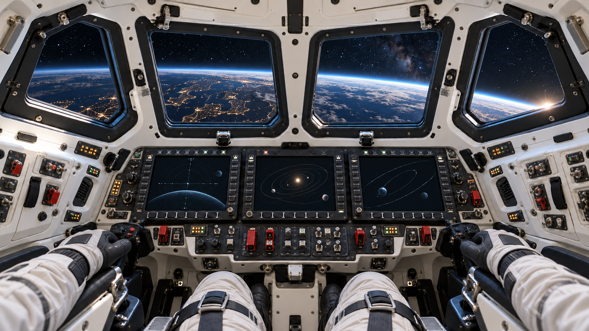

INSIDE THE WORK

SSTÉPHANE SINGERYDATA & ANALYTICS ENGINEER
OPERATIONS · DATA ENGINEERING · OBSERVABILITYData systems
Data systems
people rely on.
From live rail operations to Data Platforms and observability: I design for production and think for operations. My next step: contributing to Europe’s technological sovereignty.
01 / COCKPITFIVE STOPS · FROM EARTH TO EUROPEAN SPACE
THE JOURNEY · FIVE STOPS
Follow the route.
Start on Earth with every role, then fly out stop by stop to the next step: European space. Any stop opens on its own.
FOLLOW THE ROUTE · ← → TO MOVE BETWEEN STOPS · DRAG EARTH TO TURN IT
PREPARING THE EXPERIENCE MAP
3D view unavailable. All five portfolio sections remain available through their labels.
EARTH / PROFESSIONAL EXPERIENCE